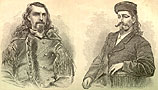
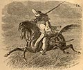

){kind=link}
){kind=link}

|
 Monday was our day of final preparation, and we commenced it by making the acquaintance of those two celebrated characters, Wild Bill and Buffalo Bill, or, more correctly, William Hickok and William Cody. The former was acting as sheriff of the town, and the latter we engaged as our guide to the Saline. Wild Bill made his entree into one court of the temple of fame some years since through Harper's Magazine. Since then his name has become a household word to residents along the Kansas frontier. We found him very quiet and gentlemanly, and not at all the reckless fellow we had supposed. His form won our admiration -- the shoulders of a Hercules with the waist of a girl. Much has been written about Wild Bill that is pure fiction. I do not believe, for example, that he could hit a nickel across the street with a pistol-ball, any more than an Indian could do so with an arrow. These feats belong to romance. Bill is wonderfully handy with his pistols, however. He then carried two of them, and while we were at Hays snuffed a man's life out with one; but this was done in his capacity of officer. Two rowdies devoted their energies to brewing a riot, and defied arrest until, at Bill's first shot, one fell dead, and the other threw up his arms in token of submission. During his lifetime Bill has probably killed his baker's dozen of men, but he has never, I believe, been known as the aggressor. To the people of Hays he was a valuable officer, making arrests when and where none other dare attempt it. His power lies in the wonderful quickness with which he draws a pistol and takes his aim. These first shots, however, can not always last. "They that take the sword shall perish with the sword"; and living as he does by the pistol, Bill will certainly die by it, unless he abandons the frontier. . . . Buffalo Bill was to be our guide. He informed us that Wild Bill was his cousin. Cody is spare and wiry in figure, admirably versed in plain lore, and altogether the best guide I ever saw. The mysterious plain is a book that he knows by heart. He crossed it twice as teamster, while a mere boy, and has spent the greater part of his life on it since. He led us over its surface on starless nights, when the shadow of the blackness above hid our horses and the earth, and though many a time with no trail to follow and on the very mid-ocean of the expanse, he never made a failure. Buffalo Bill has since figured in one of Buntline's Indian romances. We award him the credit of being a good scout and most excellent guide; but the fact that he can slaughter buffalo is by no means remarkable, since the American bison is dangerous game only to amateurs.  It was extremely fortunate for us that we had secured Cody as guide. The whole western country bordering on the plains, as we afterward learned, from sorry experience, is infested with numberless charlatans, blazing with all sorts of hunting and fighting titles, and ready at the rustle of greenbacks to act as guides through a land they know nothing about. These reprobates delight in telling thrilling tales of their escapes from Indians, and are constantly chilling the blood of their shivering party by pointing out spots where imaginary murders took place. Without compasses they would be as hopelessly lost as needleless mariners. I have my doubts if one-third of these terribly named bullies could tell, on a pinch, where the north star is. Unless they chanced to strike one of the Pacific lines which stretch across the plains, a party, under their guidance, wishing to go west would be equally liable to get among the Northern Siouxs or the Ku-Klux of Arkansas. A thousand miles east Young America's cherished ideal of the frontier scout and guide is an eagle-eyed giant, with a horse which obeys his whistle, and breaks the neck of any Indian trying to steal him. In addition to its wonderful master, the back of this model steed is usually occupied by a rescued maiden. At risk of infringing on the copyrights of thirty-six thousand of the latest Indian stories, we have obtained from an artist on the spot an illustration of the last heroine brought in and her rescuer, the rare old plainsman. |